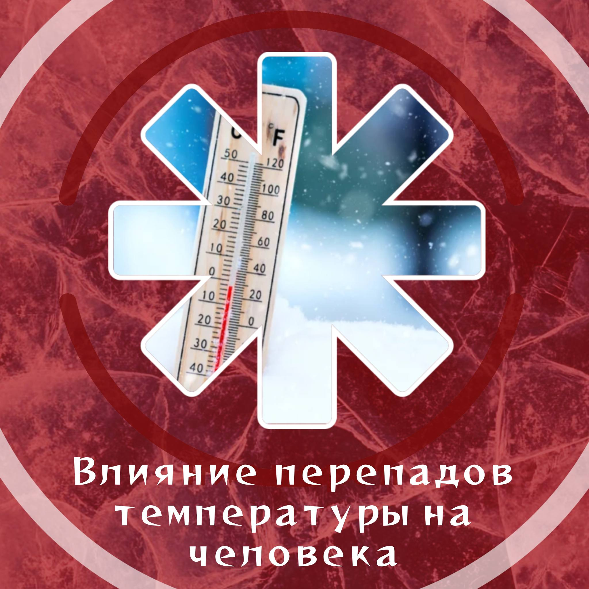
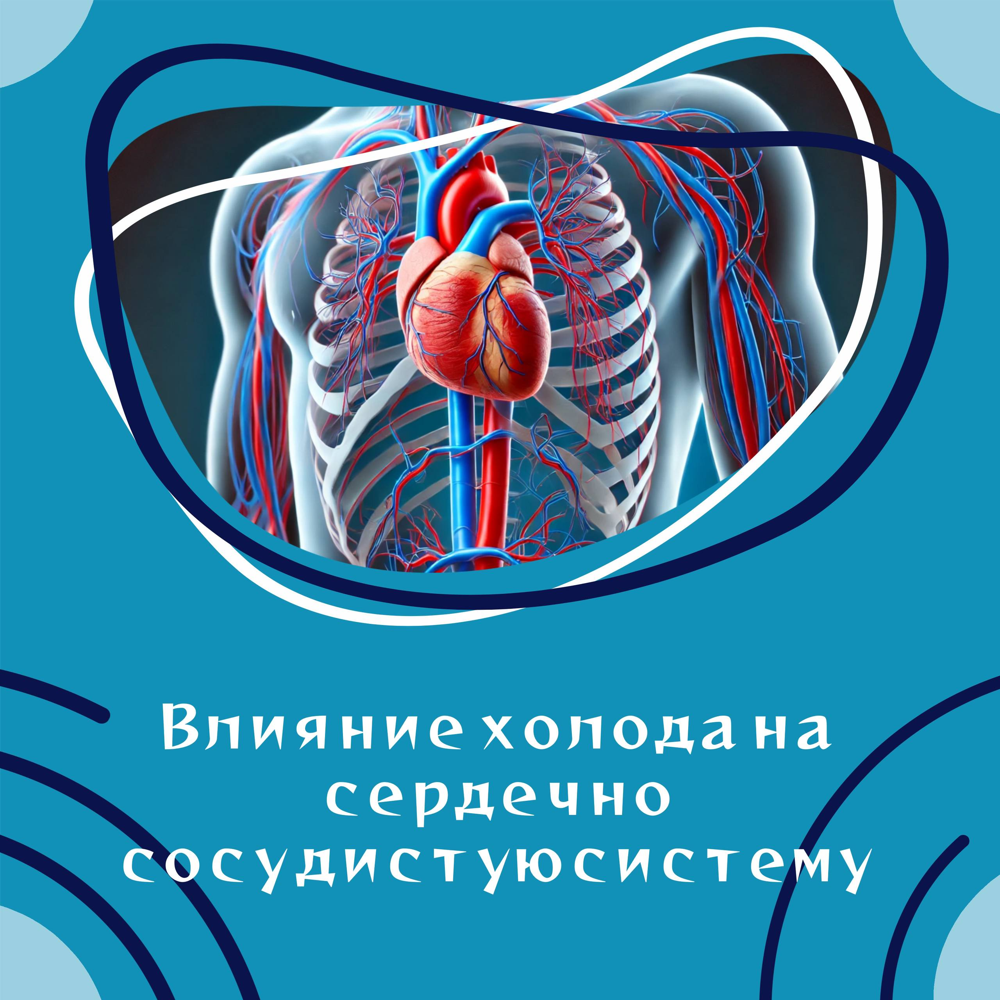
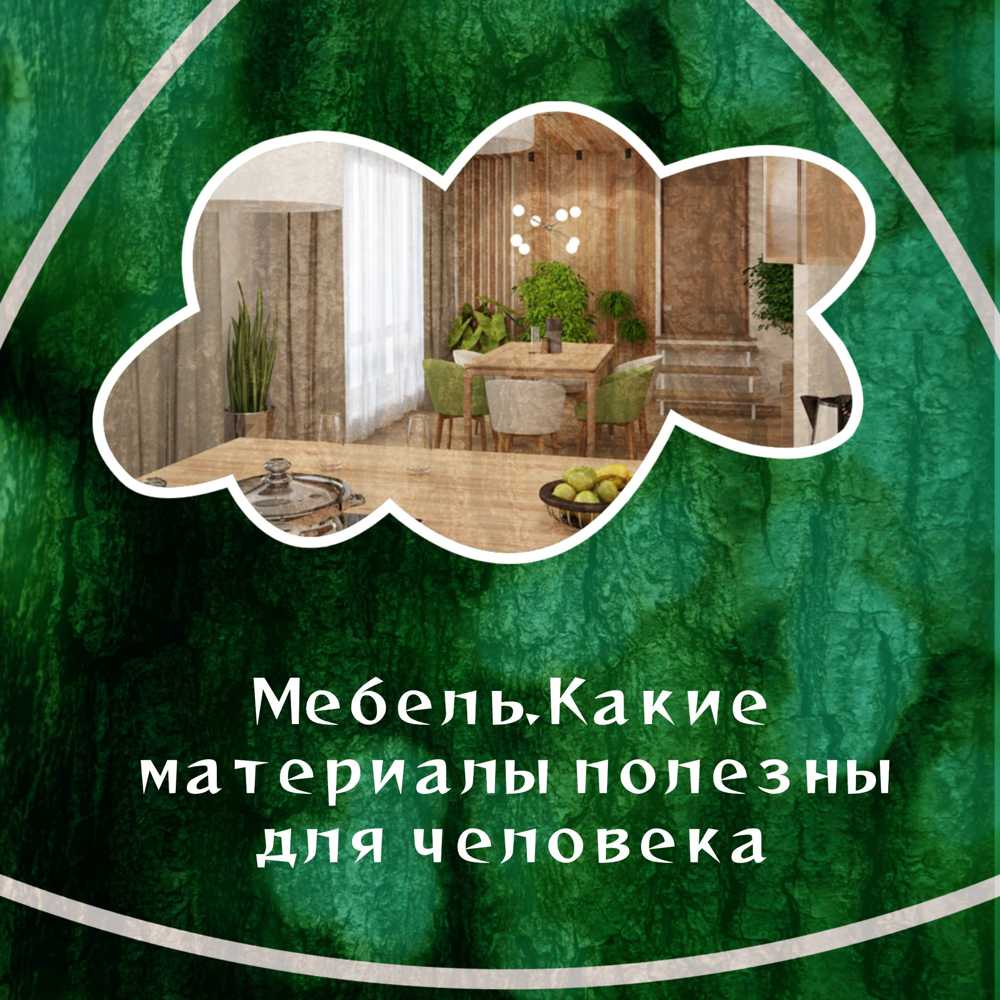

Участники проекта
Бударина Яна Геннадьевна
Роль: Дизайнер
Зона ответственности: Создание инфографики для постов в Telegram-канал проекта «Экология человека».
Выполненные задачи:
- Разработка визуальной концепции постов
- Создание макетов инфографики
- Подбор цветовой гаммы и шрифтов
- Адаптация материалов под формат Telegram
Примеры моей инфографики

Влияние экологии на здоровье

Простые эко-привычки

Загрязнение воздуха и лёгкие
Распределение обязанностей
Проект выполняется индивидуально Будариной Яной Геннадьевной.